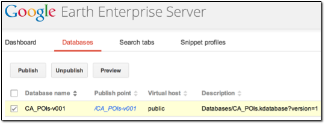

Configuring Display Rules for Point Data¶
Point data can provide useful information about points of interest (POIs) around the globe or even in your home town. Google Earth Enterprise Fusion allows you to configure the display rules for point data to distinguish different types of information. This lesson guides you through the process of graphically distinguishing the popular places in California using display rules.
- Define, Configure, and Build a Vector Project
- Define and Build an Imagery Project
- Define, Build, Push, and Publish a Database for the Point Data
- View Your Database in Google Earth EC
Define, Configure, and Build a Vector Project
This exercise walks you through the process of defining, configuring, and building a vector project using a resource you created in Defining and Building Resources.
To define and build a vector project and configure display rules for points:
Select Asset Manager from the Tools menu.
The Asset Manager appears.
Click
 on the toolbar. The Vector Project
Editor appears.
on the toolbar. The Vector Project
Editor appears.Click
 . The Open dialog appears.
. The Open dialog appears.Navigate to the
ASSET_ROOT/Resources/Vectorfolder.Select CA_POIs (a resource that you built in Defining and Building Resources), and click Open. The CA_POIs resource appears in the Vector Project Editor.

Right-click CA_POIs and select Configure Display Rules from the context menu. The Display Rules dialog appears with the Feature tab in the foreground and the default select all rule highlighted.
Specify the geometry characteristics of the POIs:
For Draw Features As, select Points.
For Simplification Method, select Representative Subset Per Tile.
For Choose, accept the default, 50% points.
For Min Points, enter 50.
For Max Points, enter 200.
Check the box next to Suppress Duplicate Points.
Under Elevation/Height, set Mode to Clamp to Ground.
On the right side of the dialog, check the box next to Draw Label.
For Visibility, accept the default range, 5 through 24.
Do not make any changes under Label Properties.
This area allows you to specify the content and appearance of a text label for each POI. However, there are so many POIs in California that the view in Google Earth EC would be too crowded.
Check the box next to Draw Icon and then:
Click the icon pair. The Icons dialog appears.

Scroll down, if necessary, and select blue_star, and click OK.
A yellow star appears next to Highlight, and a blue star appears next to Normal. The result of this setting is that Google Earth EC displays a blue star for each POI, and when you mouse over the star (highlight it), it turns yellow.
For both Highlight and Normal, accept the default color, white.
For Highlight, accept the default scale, 1.
For Normal, change the scale to 0.89.
The result of these settings is that when you mouse over a star, Google Earth EC displays the yellow (highlighted) star a little larger than the blue star.
In the Balloon section, select Text, and then click the empty text field. The Label Format dialog appears.
Select COUNTY from the Insert Field drop-down list.
«COUNTY» appears in the text box under Popup Text.
Note
You can use some basic HTML tags to format the Label text, if desired.
To the left of «COUNTY» enter <b>.
To the right of «COUNTY» enter </b><br/><br/>.
Press Enter. Adding this HTML code formats the name of the county as bold, followed by two line breaks to separate it from the text that follows (next step).
Select NAME from the Insert Field drop-down list. «NAME» appears on the next line of the text box.
- To the right of «NAME» enter <br/><br/>.
- Press Enter.
On the next line, enter Latitude:, and then select LATITUDE from the Insert Field drop-down menu.
- To the right of «LATITUDE» enter <br/><br/>.
- Press Enter.
On the next line, enter Longitude: , and then select LONGITUDE from the Insert Field drop-down menu.

Click the OK button.
For Style, select Default from the drop-down list.
Check the box next to Directions to include “To here” and “From here” links in the description balloon in Google Earth EC.
Click the Text Color button, and select a medium blue.
Click the Background Color button, and select a light yellow.
Click the OK button. You return to the Vector Project Editor.
Select File > Save. The Save dialog appears.
Navigate to the
ASSET_ROOT/Projects/Vectorfolder.Enter CA_POIs as the name of your project, and click Save.
The new project appears in the Asset Manager when you select ASSET_ROOT/Projects/Vector in the asset navigation tree.
Right-click CA_POIs, and select Build from the context menu. Google Earth Enterprise Fusion builds the project.
Define and Build an Imagery Project
Although you can build and publish a database that includes a
vector project only, you cannot connect directly to your server
with Google Earth EC to view that data unless your database also
includes an imagery project. If you publish a database that
includes a vector project only, you must use the Add Database
command on the File menu in Google Earth EC to add the database to
the base imagery after logging in to kh.google.com or
another server that serves a database that includes imagery.
This exercise walks you through the process of defining and building an imagery project using a resource you created in Defining and Building Resources. Since the focus of this lesson is on polygon display rules, it is not desirable to spend a lot of time building a large imagery project. So this exercise walks you through creating a small and simple imagery project.
Note
If you have already completed this exercise in Configuring Display Rules for Polygon Data, skip this exercise and move on to Define, Build, Push, and Publish a Database for the Point Data.
To define and build an imagery project:
In the Asset Manager, click on the toolbar. The Imagery Project Editor appears.

Click
.The Open dialog appears.
Navigate to the
ASSET_ROOT/Resources/Imageryfolder.- Select BlueMarble, and click Open.
The BlueMarble resource appears in the Imagery Project Editor.
Select File > Save.
The Save dialog appears.
Navigate to the
ASSET_ROOT/Projects/Imageryfolder.Enter BlueMarble as the name of your project, and click Save.
The new project appears in the Asset Manager when you select ASSET_ROOT/Projects/Imagery in the asset navigation tree.
Right-click BlueMarble, and select Build from the context menu.
Google Earth Enterprise Fusion builds the project.
Define, Build, Push, and Publish a Database for the Point Data
This exercise walks you through the process of defining, building, pushing, and publishing a database using the projects you created in the previous exercise.
To define, build, and push a database:
Click on the toolbar. The Database Editor appears with no projects selected.
Click
next to Vector Project. The Open dialog
appears.Navigate to
ASSET_ROOT/Projects/Vector.Select the CA_POIs project and click Open. The CA_POIs project appears in the Database Editor next to Vector Project.
Repeat steps 2 through 4 to add BlueMarble as the imagery project.
You do not need to add a terrain project for this exercise. Both projects appear on the list.
Select File > Save.
Navigate to the
ASSET_ROOT/Databasesfolder.Enter CA_POIs for the name of your database, and click Save. The name of the database appears on the right when you select the
/ASSET_ROOT/Databasesfolder in the asset navigation tree.Right-click CA_POIs, and select Build from the context menu. Google Earth Enterprise Fusion builds the database.
Right-click CA_POIs, and select Push from the context menu. The Push Database dialog appears.
Select the server association on the Server Associations drop-down list. The most recent version of the selected database is the default selection on the Version drop-down list.
Click the Push button. Google Earth Enterprise Fusion runs the process of pushing the database to the Google Earth Enterprise Server, and displays a success message when it is done.
To publish a database:
Access the Google Earth Enterprise Server Admin console in a browser window by going to myserver.mydomainname.com/admin, replacing myserver and mydomainname with your server and domain.
Sign in with the default credentials:
- Username: geapacheuser
- Password: geeadmin
Click Databases to display the list of databases pushed to the server.
Check the box next to the database you want to publish. The Publish button on the Databases page appears.

Click Publish. The Publish dialog appears.
Specify a Publish point, where the database will be accessible from. For example, if you specify CA_POIs-v001, it will be accessible from myserver.mydomainname.com/CA_POIs-v001.
To learn more about the options available in the Publish dialog, see
Click the Publish button. The Databases page updates to indicate the published status of your database.

View Your Database in Google Earth EC
This exercise walks you through the process of viewing your database in Google Earth EC.
To view your database:
Launch Google Earth EC. The Select Server dialog appears.
Enter or select the host name or IP address of your server in the Server field, and specify the Publish point that you selected when you published your map database. For example, if you specify CA_POIs-v001, it will be accessible from myserver.mydomainname.com/CA_POIs-v001.
Click the Sign In button.
Zoom in to the west coast of the US.
When you zoom in enough, Google Earth EC displays blue stars all over California. The closer you zoom in, the more spread out the stars are and the more stars you can see. When you mouse over a star, it turns yellow. When you click a star, a description balloon displays the information you specified in the format you defined in the Display Rules dialog.
Note
If you cannot see the vector data, make sure the check box next to CA_POIs in the Layers panel is checked.